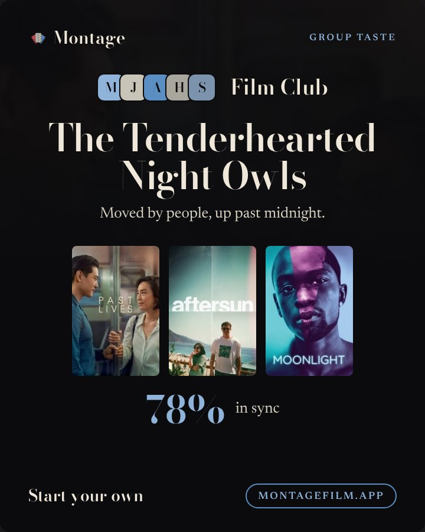
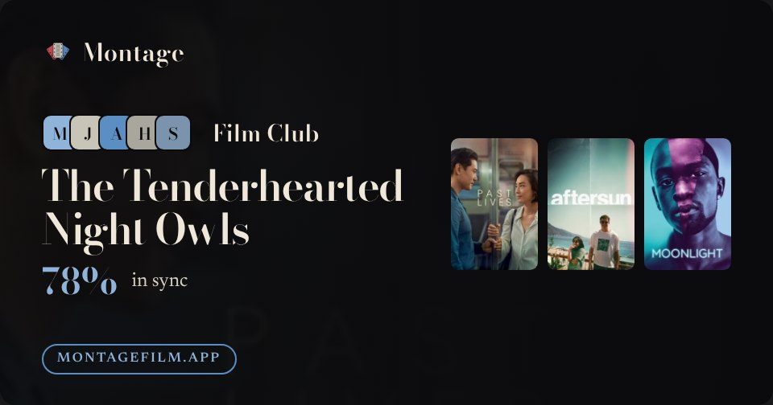

12 · Group taste card
Group taste card
/g/<id>/taste/card · Post 4:5
- The three films that define them on a reel with the oxblood offset.
- The group's posters upright and dimmed behind the top; ghost names over them.
- The tag line and Start your own in italics.
ghost namesoxblood: reelreelitalic voice
v1

v2

Montage
Group taste
MJAHS
Film Club
The Tenderhearted Night Owls
Moved by people, up past midnight.
78%
in sync
Start your own
montagefilm.app
12b · Group taste preview
Group taste preview
/g/<id>/taste/card?size=og · OG
- The same moves at chat size: the posters on a reel with the offset, ghost names behind the left.
ghost namesoxblood: reelreel
v1

v2
Montage
MJAHS
Film Club
The Tenderhearted Night Owls
78%
in sync
montagefilm.app